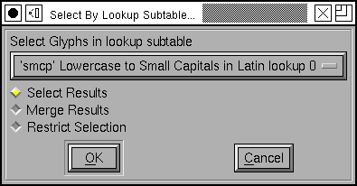

Select By Lookup Subtable
This dialog allows you to select glyphs which undergo a
transformation described in the selected lookup subtable.
There are three variants on how the search behaves:
- The selection will be set to whatever glyphs match the
search criteria
- The selection will be expanded. Anything that was
previously selected will remain so, and anything that matches
the search criteria will become selected.
- The selection will be restricted. Only glyphs previously
selected will be searched, the selection will be restricted
to those which match
So if you want to search for all ligatures containing both
"f" and "i"...
Search for ligatures containing "f" with "<*> Select
Results" set
Then Search for ligatures containing "i" with <*>
Restrict Selection" set
-- Prev -- TOC -- Next
--